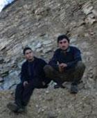

The project
is implemented
by Caucasus Center
of Peacemaking
Initiatives
Supported by South Caucasus Regional Office of the Heinrich Boell Foundation
Budget: EUR 3150
Supported by South Caucasus Regional Office of the Heinrich Boell Foundation
Budget: EUR 3150
OPEN UP THE BORDER!

Throughout "Peacemaking Team" project implemented by the Caucasus Center of Peacemaking Initiatives in 10 regions of Armenia and Nagorno Karabakh, we shot a 45-hour duration film. In addition to the videotape recording of the meeting, separate interviews were also held.
Based on the conducted interviews, a documentary film is being shot, which deals with our perception and understanding of our relations with Azerbaijan, also, the importance and intensity of conflicts existing between us and our diversity of opinions and approaches.
The film is to go beyond the frames of an ordinary reporting about the meetings on geography and chronology. It presents a sequence of portraits, of histories about various people.
The monologues are arranged around the main idea, namely, a dispute and discrepancies in opinions inside the Armenian Society.
The film depicts our passive state, our escape from problems, our helplessness to change something, our absurdity of conflicts and about the fact that many years of isolation are perceived by us as the only possible way of avoiding wars.
Each of us speaking about Armenian-Azerbaijan relations, raises the alarm - it is impossible to continue living this way.
Based on the conducted interviews, a documentary film is being shot, which deals with our perception and understanding of our relations with Azerbaijan, also, the importance and intensity of conflicts existing between us and our diversity of opinions and approaches.
The film is to go beyond the frames of an ordinary reporting about the meetings on geography and chronology. It presents a sequence of portraits, of histories about various people.
The monologues are arranged around the main idea, namely, a dispute and discrepancies in opinions inside the Armenian Society.
The film depicts our passive state, our escape from problems, our helplessness to change something, our absurdity of conflicts and about the fact that many years of isolation are perceived by us as the only possible way of avoiding wars.
Each of us speaking about Armenian-Azerbaijan relations, raises the alarm - it is impossible to continue living this way.
NARRATIVE

Part 1.
If all the frontiers
were opened,
we would play football.
■ Time has come when we have to be in contact. Ordinary citizens of Azerbaijan and Armenia do not consent to remain always confronting sides, do they? It looks like that the process of the settlement of this problem has become the method of gaining rates for various figures and all of them unanimously declare, "Karabakh is ours and no single inch of it will be shared with anyone". But is it within our powers not to share a single inch of it and remain in the conflict zone?
■ It would be good if these frontiers were opened. We would go there, particularly, to Sadarak to play football… We would hold competitions… and we would make new friends… But would it be possible to play football if the frontiers were not opened?
■ The nation is not at enmity, it is the government which is at enmity. It is the government’s will to make us either friends or enemies. What else is to be said further? To incline the name of the nation is a matter of cause. But should the nation express its willingness to wish or to do something, it will be an unprecedented event!
■ Our relations have always been good. They were also good at those times, they were not bad. Should our relations be restored, no one will suffer from it, the nation will not suffer. But as you know, this matter may be difficult to settle. In a general sense, it is easy to settle a civilized matter. Also, it is easy to undertake steps for people to meet each other half way. But enmity still remains, enmity inside will still remain!
If all the frontiers
were opened,
we would play football.
■ Time has come when we have to be in contact. Ordinary citizens of Azerbaijan and Armenia do not consent to remain always confronting sides, do they? It looks like that the process of the settlement of this problem has become the method of gaining rates for various figures and all of them unanimously declare, "Karabakh is ours and no single inch of it will be shared with anyone". But is it within our powers not to share a single inch of it and remain in the conflict zone?
■ It would be good if these frontiers were opened. We would go there, particularly, to Sadarak to play football… We would hold competitions… and we would make new friends… But would it be possible to play football if the frontiers were not opened?
■ The nation is not at enmity, it is the government which is at enmity. It is the government’s will to make us either friends or enemies. What else is to be said further? To incline the name of the nation is a matter of cause. But should the nation express its willingness to wish or to do something, it will be an unprecedented event!
■ Our relations have always been good. They were also good at those times, they were not bad. Should our relations be restored, no one will suffer from it, the nation will not suffer. But as you know, this matter may be difficult to settle. In a general sense, it is easy to settle a civilized matter. Also, it is easy to undertake steps for people to meet each other half way. But enmity still remains, enmity inside will still remain!
Part 2.
It is not our war?...
How did it happen that our fate
got into the hands of other people?
■ In the beginning, we did not take many things seriously because we were unaware of many things and had no idea of how serious it would be. Once, it was at the very beginning of the war, a Russian officer out of nowhere appeared before me. He gave me four cartridges and said, "I should have shot you, your life depends on these four cartridges." I am giving them to you. "Never come to this forest". These are the words of a Russian officer…
■ All of us are to blame. You say that people didn’t want this war? True, people did not want this war. But at the beginning of the war people were very much interested in it. It looks like they were playing a performance. And here is the result all of us are seeing! The "sold out" notice.
■ There was a curfew, then the curfew was cancelled and we went for a "sitting" strike. The slogans ran "Off a single soldier of the Russian Empire!" We ourselves ought to defend our collapsed country. And Azeries started their massacre in Sumgait. That was awful. And it was as clear as a day that we are not going to serve in the Russian Empire. We brought our dead Armenians killed by the Russian Empire from there. That is true that their intervention was a big help. Why not? We were also helped and we were also given an opportunity to go ahead. The situation of those times was like this, "Seize whatever at hand so as to be able to bring an accusation later."
■ The fourth army was on their side. It was the fourth army that devastated about seven villages of Hadrut on that side, wasn’t it? The fourth army along with the Turks intruded and drove them off. They were Dolsanyar, Arakul. The people were evacuated and sent off in the direction of Khndzoresk. The young people were captured and taken to Baku.
■ Other people started this war between the two nations. It was not the two nations that started the war. This is how the world is created, a weak point of a person is normally detected. Be it a man, nation or state, their weak points are spotted and other people make use of them. Countries and states have found the weak points of Azerbaijan and Armenia, which is the Karabakh. This was the cause of initiating this war. I can freely state that it was the Russians. During the war they showed their help and assistance to both Azerbaijanians and Armenians.
It is not our war?...
How did it happen that our fate
got into the hands of other people?
■ In the beginning, we did not take many things seriously because we were unaware of many things and had no idea of how serious it would be. Once, it was at the very beginning of the war, a Russian officer out of nowhere appeared before me. He gave me four cartridges and said, "I should have shot you, your life depends on these four cartridges." I am giving them to you. "Never come to this forest". These are the words of a Russian officer…
■ All of us are to blame. You say that people didn’t want this war? True, people did not want this war. But at the beginning of the war people were very much interested in it. It looks like they were playing a performance. And here is the result all of us are seeing! The "sold out" notice.
■ There was a curfew, then the curfew was cancelled and we went for a "sitting" strike. The slogans ran "Off a single soldier of the Russian Empire!" We ourselves ought to defend our collapsed country. And Azeries started their massacre in Sumgait. That was awful. And it was as clear as a day that we are not going to serve in the Russian Empire. We brought our dead Armenians killed by the Russian Empire from there. That is true that their intervention was a big help. Why not? We were also helped and we were also given an opportunity to go ahead. The situation of those times was like this, "Seize whatever at hand so as to be able to bring an accusation later."
■ The fourth army was on their side. It was the fourth army that devastated about seven villages of Hadrut on that side, wasn’t it? The fourth army along with the Turks intruded and drove them off. They were Dolsanyar, Arakul. The people were evacuated and sent off in the direction of Khndzoresk. The young people were captured and taken to Baku.
■ Other people started this war between the two nations. It was not the two nations that started the war. This is how the world is created, a weak point of a person is normally detected. Be it a man, nation or state, their weak points are spotted and other people make use of them. Countries and states have found the weak points of Azerbaijan and Armenia, which is the Karabakh. This was the cause of initiating this war. I can freely state that it was the Russians. During the war they showed their help and assistance to both Azerbaijanians and Armenians.
Part 3.
Peacemaking Team - Armenia:
My son serves
in the army of Karabakh,
I do not want him to die.
■ Recently I have come from Russia. I had Azerbaijanians friends there. While sitting round the table, we did not encounter a question like "You are an Armenian or you are an Azerbaijanian." We even got into an argument with the Russians. All of us there are called Caucasians. We have much in common. But if the war erupts, I can be completely confident that they will take up their weapons from there and will stand on their own frontiers and we will stand on our own frontiers. I hope that it will never happen!
■ Our teachers convince us that an Azerbaijanian is our enemy that he has done a lot of harm to us. Sure, they do not say directly that an Azerbaijanian is your enemy. But we learn that the time when Stalin handed Karabakh over to Azerbaijan, we start hating them in our hearts. It was not long ago when that Azerbaijanian slaughtered an Armenian in Budapest, we started hating Azerbaijanians ever so much. At this point, how can the reconciliation between the two nations take place?
■ My great grandparent lived in Van. I do not live there. My homeland is there. I am not saying that I am to be in Van, to live there. But I do wish to. It is my historical homeland. And now that Azerbaijanians state that they are willing to go to their homeland. But it is not their homeland. Once it was their homeland. It is the Soviet Union that handed Karabakh over to them. Arstakh has never been an Azerbaijan homeland. It was our homeland.
■ There exist the so-called fair and unfair war. A fair war is waged for the sake of one’s homeland. And if one wages a war for the sake of one’s homeland, then one can fall victim to the war. Big affairs require many victims!...
■ Pardon me, but I don’t wish my son to die. At the present moment, my son is serving in the Army in Karabakh, and I don’t want him to die, a man that is what matters more!
Peacemaking Team - Armenia:
My son serves
in the army of Karabakh,
I do not want him to die.
■ Recently I have come from Russia. I had Azerbaijanians friends there. While sitting round the table, we did not encounter a question like "You are an Armenian or you are an Azerbaijanian." We even got into an argument with the Russians. All of us there are called Caucasians. We have much in common. But if the war erupts, I can be completely confident that they will take up their weapons from there and will stand on their own frontiers and we will stand on our own frontiers. I hope that it will never happen!
■ Our teachers convince us that an Azerbaijanian is our enemy that he has done a lot of harm to us. Sure, they do not say directly that an Azerbaijanian is your enemy. But we learn that the time when Stalin handed Karabakh over to Azerbaijan, we start hating them in our hearts. It was not long ago when that Azerbaijanian slaughtered an Armenian in Budapest, we started hating Azerbaijanians ever so much. At this point, how can the reconciliation between the two nations take place?
■ My great grandparent lived in Van. I do not live there. My homeland is there. I am not saying that I am to be in Van, to live there. But I do wish to. It is my historical homeland. And now that Azerbaijanians state that they are willing to go to their homeland. But it is not their homeland. Once it was their homeland. It is the Soviet Union that handed Karabakh over to them. Arstakh has never been an Azerbaijan homeland. It was our homeland.
■ There exist the so-called fair and unfair war. A fair war is waged for the sake of one’s homeland. And if one wages a war for the sake of one’s homeland, then one can fall victim to the war. Big affairs require many victims!...
■ Pardon me, but I don’t wish my son to die. At the present moment, my son is serving in the Army in Karabakh, and I don’t want him to die, a man that is what matters more!
Part 4.
Peacemaking Team - Karabakh:
If the politicians
are threatened by bombs,
they are sure to sign
an agreement of peace.
■ I express my gratitude to those wishing to establish peace regardless of their country and nationality. I consider the one wishing to live in peace a real man, with a big letter. But how can we unite all of them so as to establish peace? This is where I see an obstacle. We all require peace, but what is really difficult is to unite us and live in peace.
■ I lost my husband at war. I would not like my daughters to lose their husbands at war. Many children whose parents fell victims to the war are studying at our establishments. I wish this war stopped. I know that today, the fellows who were wounded in this war are dying. I wish our small, big and great Armenia were deprived of all the enemies and did not create an image of an enemy. I wish the same situation were in Azerbaijan.
■ You know, many people fell a victim to this war and by improvement of our relations we have make zero that many people have died…
■ I was born in Khanlar region of village Martushen. When I moved to live here in 1994, as a woman and not an Armenian, I felt very bad here when I saw a child’s shoes and baby carriages. People lived in those houses. As a woman, I suffered too much about it but as an Armenian I can say that we are unable to live together, especially in Lachin. If Turks live in Lachin, our Goris and Karabakh will be bombed. It is beyond impossibility that we live together. As a woman, I do understand an Azerbaijanian who grieves, cries over his own grave, because we also grieve. The grave of my father is there, my family and I also grieve. As a woman, I understand them, but we cannot live together.
■ The one who has lost his homeland, his graves, will have difficulty speaking about friendship. It would be more correct to say that if the graves are returned to these people and they will be given some hopes that some day they will be able to return to their homelands, then these issues can be raised. It is surely my personal opinion. You have just heard the stories of the people who attempted to hide and defend their children with all their efforts from tanks and they themselves were bombarded from air. No one else witnessed it. The only ones who felt it were those people who were attacked. When remembering those days, my heart was filled with pain. Probably, it is still too early. But time will come when we will be able to share with one another, support one another.
■ Hence, the matter that concerns here is that it is Karabakh - Azerbaijan or Armenia - Azerbaijan that is in no condition to settle it. The international pressure is too big upon this problem and therefore, we are deprived of any voice. All of us are saying that the matter ought to be settled this or that way but it is impossible, since this concerns the interests of big and powerful states on this small earth. The policy of the so-called "Pan-Turkism" is not beneficial for the USA. But America may be restraining a bit so that we will not be wiped off the face of the earth. Simply, when Armenia declares that we have an army and so on and so forth, we give ourselves some hopes that if there is no Russia and if the interests of America do not contradict the interests of Turkey, then it will be our end.
■ The participation of Karabakh in negotiations is of no interest to Europe. Why? The reason is that the two recognized states enter into U.N.O. and they can dictate them their will, Europeans can also dictate their will. But Karabakh is neither a weight, nor a scale. Either puts it there or here, a European is the hand that plays, and Karabakh resident is the playing card for him which can be put either on the scale or another. If it is necessary to "saddle" Azerbaijan in some political question, then it can be frightened and threatened with the Karabakh problem. Armenia is also frightened and threatened with the same Azerbaijan question. Should Europe and America wish to prove that it is not the matter of the dispute, that Karabakh is and will be an Armenian land, then they have tens of programs at their disposal so as to prove it and prove the opposite that this land is not ours. They do whatever seems beneficial for them…
■ Have a look at our children. Thirty or forty percents of them are the children of killed parents. Can this child forget that his father was killed by a Turk? Similarly, can a child of a Turk forget that his father was killed by an Armenian? We also killed, didn’t we? We defended ourselves by killing his father, brother. From the point of view of self-defense we killed them. Is it probably done for the young man to forget about it and live in peace? This revenge will still be on and flared up again five, ten years. And the same war, the same battle will begin. My personal opinion is that it is impossible after all this. We fought, seized lands. And this enmity was implanted in our generation.
Peacemaking Team - Karabakh:
If the politicians
are threatened by bombs,
they are sure to sign
an agreement of peace.
■ I express my gratitude to those wishing to establish peace regardless of their country and nationality. I consider the one wishing to live in peace a real man, with a big letter. But how can we unite all of them so as to establish peace? This is where I see an obstacle. We all require peace, but what is really difficult is to unite us and live in peace.
■ I lost my husband at war. I would not like my daughters to lose their husbands at war. Many children whose parents fell victims to the war are studying at our establishments. I wish this war stopped. I know that today, the fellows who were wounded in this war are dying. I wish our small, big and great Armenia were deprived of all the enemies and did not create an image of an enemy. I wish the same situation were in Azerbaijan.
■ You know, many people fell a victim to this war and by improvement of our relations we have make zero that many people have died…
■ I was born in Khanlar region of village Martushen. When I moved to live here in 1994, as a woman and not an Armenian, I felt very bad here when I saw a child’s shoes and baby carriages. People lived in those houses. As a woman, I suffered too much about it but as an Armenian I can say that we are unable to live together, especially in Lachin. If Turks live in Lachin, our Goris and Karabakh will be bombed. It is beyond impossibility that we live together. As a woman, I do understand an Azerbaijanian who grieves, cries over his own grave, because we also grieve. The grave of my father is there, my family and I also grieve. As a woman, I understand them, but we cannot live together.
■ The one who has lost his homeland, his graves, will have difficulty speaking about friendship. It would be more correct to say that if the graves are returned to these people and they will be given some hopes that some day they will be able to return to their homelands, then these issues can be raised. It is surely my personal opinion. You have just heard the stories of the people who attempted to hide and defend their children with all their efforts from tanks and they themselves were bombarded from air. No one else witnessed it. The only ones who felt it were those people who were attacked. When remembering those days, my heart was filled with pain. Probably, it is still too early. But time will come when we will be able to share with one another, support one another.
■ Hence, the matter that concerns here is that it is Karabakh - Azerbaijan or Armenia - Azerbaijan that is in no condition to settle it. The international pressure is too big upon this problem and therefore, we are deprived of any voice. All of us are saying that the matter ought to be settled this or that way but it is impossible, since this concerns the interests of big and powerful states on this small earth. The policy of the so-called "Pan-Turkism" is not beneficial for the USA. But America may be restraining a bit so that we will not be wiped off the face of the earth. Simply, when Armenia declares that we have an army and so on and so forth, we give ourselves some hopes that if there is no Russia and if the interests of America do not contradict the interests of Turkey, then it will be our end.
■ The participation of Karabakh in negotiations is of no interest to Europe. Why? The reason is that the two recognized states enter into U.N.O. and they can dictate them their will, Europeans can also dictate their will. But Karabakh is neither a weight, nor a scale. Either puts it there or here, a European is the hand that plays, and Karabakh resident is the playing card for him which can be put either on the scale or another. If it is necessary to "saddle" Azerbaijan in some political question, then it can be frightened and threatened with the Karabakh problem. Armenia is also frightened and threatened with the same Azerbaijan question. Should Europe and America wish to prove that it is not the matter of the dispute, that Karabakh is and will be an Armenian land, then they have tens of programs at their disposal so as to prove it and prove the opposite that this land is not ours. They do whatever seems beneficial for them…
■ Have a look at our children. Thirty or forty percents of them are the children of killed parents. Can this child forget that his father was killed by a Turk? Similarly, can a child of a Turk forget that his father was killed by an Armenian? We also killed, didn’t we? We defended ourselves by killing his father, brother. From the point of view of self-defense we killed them. Is it probably done for the young man to forget about it and live in peace? This revenge will still be on and flared up again five, ten years. And the same war, the same battle will begin. My personal opinion is that it is impossible after all this. We fought, seized lands. And this enmity was implanted in our generation.
Part 5.
Gera: There is only one nation
in the world, namely, decent people.
■ I think when this conflict arose between our countries, which is a very difficult process, it embraced the hearts of many people who lived on this and that side. This war involved all the Armenians and Azerbaijanians, all the kind people who as a matter of principle did not want it. No one needed this war, but, unfortunately, as it so turned out we had to take up weapons and defend our frontiers…
… The army has abruptly changed my life. I have been dreaming of coming to this city again, arriving in Baku, seeing my native places and streets… and as the fate willed my dream did come true. Undoubtedly, I couldn’t imagine that there would be such a turn in my life that I would see my city in such a way... I was lying in the ward of the Naval hospital and out of the window one could see the sea...
■ I think when this conflict arose between our countries, which is a very difficult process, it embraced the hearts of many people who lived on this and that side. This war involved all the Armenians and Azerbaijanians, all the kind people who as a matter of principle did not want it. No one needed this war, but, unfortunately, as it so turned out we had to take up weapons and defend our frontiers…
… The army has abruptly changed my life. I have been dreaming of coming to this city again, arriving in Baku, seeing my native places and streets… and as the fate willed my dream did come true. Undoubtedly, I couldn’t imagine that there would be such a turn in my life that I would see my city in such a way... I was lying in the ward of the Naval hospital and out of the window one could see the sea...